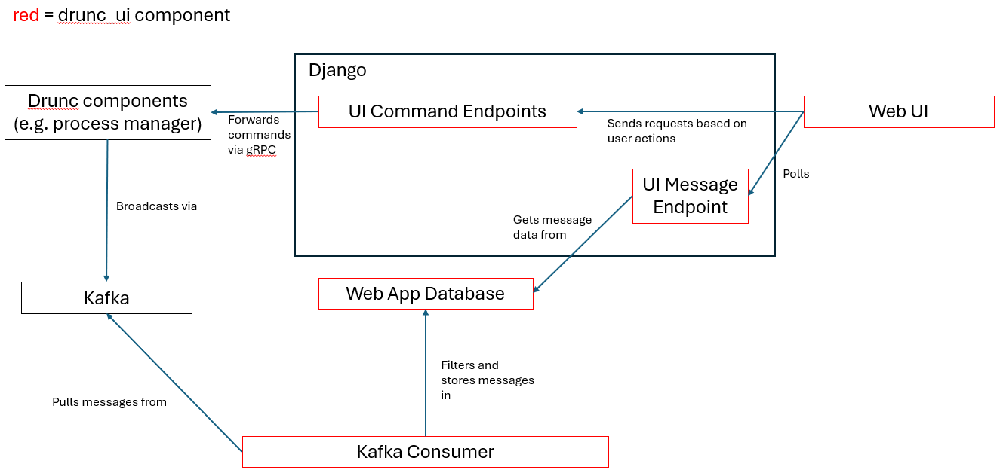

Code Overview
High-level Architecture
The web application provides several user interfaces covering different aspects of the DUNE run control system. The functionality of the app requires multiple interacting components. A simplified summary of the web application and its interactions with external components is shown below.

The application provides several separate user interfaces but there is also shared infrastructure between these. For this reason the code is organised into three Django apps:
process_manager- the Process Manager UI.controller- the Controller UI.main- common functionality and shared infrastructure between the UIs.
This separation of concerns has been chosen to allow splitting the UIs into separate code bases at a later point if desired.
Design Goals
- Compatibility with wider expertise of the DUNE project i.e. Python and avoiding complex frontend code.
- Simplicity.
- Provide a "good enough" user experience.
- Ease of development.
Technology Choices
- Django
- A popular Python back-end framework with a batteries included approach.
- Standardised code layout.
- Abstraction over underlying database technology via Object Relational Mapping.
- Excellent documentation.
- Broad range of community packages.
- HTMX
- Frontend library that extends html to enable server side rendering capabilities.
- Easy to learn.
- Declarative approach.
- Popular in the Django community.
- Can be used sparingly and progressively alongside standard Django templating.
- Hyperscript
- A front-end scripting alternative to Javascript.
- Complements HTMX by providing small amounts of dynamic behaviour where required.
- Prioritises readability and conciseness.
- Emphasises locality of behaviour.
- Can be used sparingly and progressively alongside standard Django templating.
External Interactions
Dune Run Control (drunc)
The primary purpose of this code base is to provide web based user interfaces for the
various components of drunc (e.g. the process manager or controllers). Interactions with
drunc components use the provided gRPC interfaces however this is abstracted over by
the Driver classes provided in the drunc codebase (see for instance the
ProcessManagerDriver class). A thin wrapper over the driver classes is used to handle
authentication (currently dummy tokens).
Kafka
Kafka is used to send informational messages between different components of drunc. These messages are displayed in several places in the web UIs. Receiving messages from Kafka requires a long-running process to act as a consumer and make messages available within the web application.
The consumer is implemented as a Django admin command and can be run as
python manage.py kafka_consumer. This makes messages available to the web application
by storing them in the database. This command is also responsible for pruning messages
from the database after a configurable retention period.
Authentication
In the absence of a defined authentication mechanism for use in production, the project currently uses the built-in Django authentication system. This requires manual creation of users via the Django command line interface and stores user data in the application database. This is a placeholder that will need to be replaced.
Permissions
Permissions are used to control the actions that can be performed or information that
can be viewed by different users. Permissions are defined on the custom user model
defined in main/models.py. A fine-grained approach is taken to permissions whereby
individual actions are have their own associated permission. Once the authorisation
model for the dune-daq systems is well defined, individual permissions can be grouped
together into user roles via Django groups.
Database
This application requires a database to:
- Store user data.
- Manage user sessions.
- Cache broadcast messages.
An SQLite database is used in development however Django abstracts over the underlying database technology and supports multiple different databases that may be used in deployment.